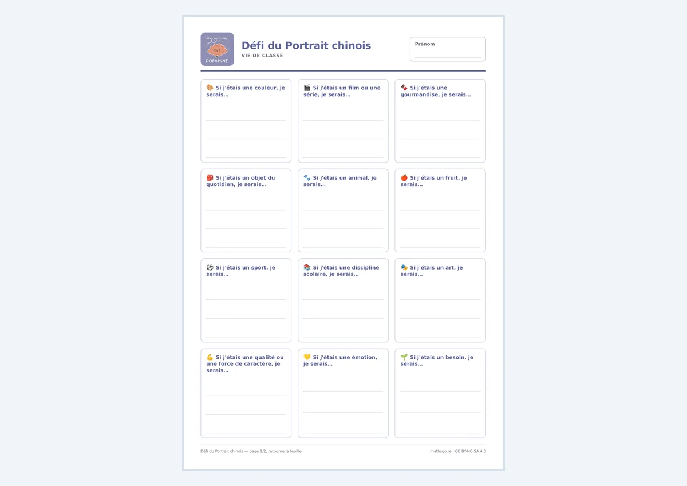
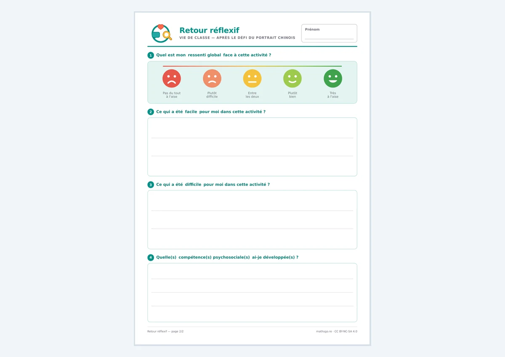

Défi du Portrait chinois
Une fiche générique recto-verso, prête à imprimer, pour apprendre à se connaître et à mieux connaître les autres. Douze « Si j’étais… » au même niveau, d’une couleur ou d’un fruit jusqu’à une force de caractère, une émotion ou un besoin, puis un retour réflexif au verso.
La fiche élève
A4 recto-versoTélécharger la fiche
Douze questions « Si j’étais… » sur un pied d’égalité : les goûts et les activités disent autant de nous que les qualités.
{kind=link}

Le retour réflexif
Verso{kind=link}
Repères pédagogiques
vie de classeUn déroulé qui monte progressivement
L’activité va du plus intime au plus partagé. Chaque étape est facultative : on s’arrête où le groupe est prêt à s’arrêter.
1Chacun remplit sa fiche seul, sans la montrer.
2Partage avec son voisin, en binôme.
3Si le groupe s’y prête, un second tour à quatre.
4On lit un portrait à voix haute : à qui est-il ?
Points de vigilance
- Afficher au tableau les listes de forces de caractère, d’émotions et de besoins : sans elles, les questions correspondantes bloquent beaucoup d’élèves.
- Ne lire à voix haute que des portraits de volontaires, jamais une fiche prise au hasard.
- Le prénom ne sert qu’à retrouver sa fiche : il peut s’écrire à la fin.
- Une fiche incomplète reste acceptable. Ce n’est ni une évaluation ni un diagnostic.